The uvisensor package¶
multiplecamera.py¶
Multithreading routine for controlling external FPGAs with cameras.
The module creates several parallel threads, in order to optimize the execution time, as it contains several instructions which require waiting for external resources before continuing execution e.g. waiting for the TCP/IP client to deliver FPGA registers information. Namely, 6 different threads are managed and indexed in a list called threads:
- 4 threads that run the 4 FGPAs initialization routines. Afterwards, endless loops continually request the UGVs’ positions to each FPGA.
- Another thread that interacts with the user through keyboard. It reads input commands and performs corresponding actions.
- A final thread is in charge of merging the information obtained at each FPGA thread and obtain global UGVs’ positions.
NOTE: The proper way to end the program is to press ‘Q’, as the terminal prompt indicates during execution. If the Keyboard Interrupt is used instead, it will probably corrupt the TCP/IP socket and the FPGAs will have to be reset.
-
class
uvisensor.multiplecamera.DataFusionThread(triangles, ntriangles, conditions, inborders, quadrant_limits, begin_events, end_event, reset_flags, publisher, name='Fusion Thread')¶ Child class of threading.Thread for merging and processing data.
The run method, where is specified the behavior when the start method is called, is overrided. At first, it waits until all cameras are initialized. Then it enters an endless loop until the end_event flag is raised. At each iteration:
- Check the triangles found by each CameraThread.
- When a camera detects a triangle, it determines if the triangle is in the borders region of another camera. If that is True, orders the creating of a new ROI tracker in the second camera.
- Evaluate if an UGV exits a camera, deleting the ROI tracker if it is True.
- Merge the information obtained in all the cameras and write it in a ROS topic
Parameters: - triangles – READ ONLY List containing N dictionaries, where N is the number of Camera threads. Each dictionary element is the set of coordinates of an UGV inside the Nth camera.
- ntriangles – WRITE N-len list of the same type and shape as triangles, for exchanging triangles information between CameraThreads.
- conditions – List containing N threading.Condition objects. They are used for synchronizing the CameraThreads and the DataFusionThread when doing R/W operations on shared variables.
- inborders – List containing N dictionaries. Each dictionary element is a flag set to True when the UGV is within the Nth camera borders region.
- quadrant_limits – List containing N 4x2 arrays. Each array contains the 4 points defining the working space of the Nth camera.
- end_event – threading.Event object that is set to True when the UserThread detects an ‘end’ order from the user.
- publisher – rospy.Publisher object for sending pose values to a ROS topic, that can be read by other ROS nodes.
- reset_flags – List containing N dictionaries whose entries are flags set to True when a ROI tracker in specified FPGA to be reset.
- name – String containing the name of the current thread.
{kind=link}
-
class
uvisensor.multiplecamera.CameraThread(triangles, ntriangles, begin_event, end_event, condition, inborders, reset_flag, name=None, conf_file='')¶ Child class of threading.Thread for capturing frames from a camera.
The run method, where is specified the behavior when the start method is called, is overrided. At first, it loads the FPGA configuration. Then it enters an endless loop until end_event flag is raised. At each iteration, when possible, reads the FPGA register containing triangles location, processes the data and writes it to the global shared variable triangles.
Parameters: - triangles – Dictionary where each element is an instance of geometry.Triangle. It is a global variable for sharing the information of different triangles detected in the camera space. Each triangle has a UNIQUE key identifier. It is used for writing and sending to other threads the triangle elements.
- ntriangles – READ ONLY dictionary of the same type and shape as triangles. It contains the triangles detected by other cameras that are inside the borders region of the current camera’s space.
- begin_event – threading.Event object that is set to True when the FPGA is configured and the thread begins the main loop.
- end_event – threading.Event object that is set to True when the execution has to end.
- condition – threading.Condition object for synchronizing R/W operations on shared variables i.e. triangles, inborders.
- inborders – READ ONLY dictionary whose elements indicate if the corresponding triangle is located within the borders region of current camera’s space. Its keys have an univocal correspondence with the key identifiers of the triangles dictionary.
- reset_flag – READ ONLY dictionary of boolean elements. They are set to True when its corresponding triangle exits the current camera’s space.
- name – String that provides the name of the thread.
- conf_file – String containing the relative path to the configuration file of the camera.
-
class
uvisensor.multiplecamera.UserThread(begin_events, end_event, name='User Thread')¶ Child class of threading.Thread for interacting with user.
The run method, where is specified the behavior when the start method is called, is overrided. Ask the user for commands through keyboard.
Parameters: - begin_events – List with N threading.Event objects, where N is the number of Camera threads. Until the set up of every camera is finished, the user can not interact with this thread.
- end_event – threading.Event object that is set to True when the UserThread detects an ‘end’ order from the user.
{kind=link}
client.py¶
This module contains the Client class, which inherits from socket.socket
- socket.socket class source code can be found in the folowing link: https://hg.python.org/cpython/file/2.7/Lib/socket.py
- Previous class is a child of the _socket.socket class. Its source code can be found in the following link: https://github.com/biosbits/bits/blob/master/python/_socket.py
-
class
uvisensor.client.Client(buffer_size=2048, timeout=2.0)¶ Child class of socket.socket which includes register operations.
It is intended to work with registers of an external FPGA. The register identifiers must correspond with the ones of the HDL circuit implemented in the FPGA.
Used methods from parent class:
- connect((host, port)): connects to specified remote address
- close(): close the socket openned with the client
- send(data): send data to the client
- recv(buflen): read the specified number of bytes
- settimeout(timeout): time to wait for the client to respond
Parameters: - buffer_size (int) – number of bytes of the incomming data.
- timeout (int or float) – value, in seconds, of the time that will be waited for reading incoming data. This will set the object to timeout mode (By default, it is set to blocking mode).
The class has 2 dictionaries, _REGISTERS and _COMMANDS, that contain all the valid commands that can be sent to the FPGA and the declared registers inside it. When interacting with the FPGA, can only be accessed the commands and registers in these dictionaries.
Registers
- RED/GREEN/BLUE_THRESHOLD: The pixel intensity thresholds for each of the 3 colors are stored in these registers, in the form of (low_threshold, high_threshold).
- IMAGE_SHAPE:
- ...
-
close_connection()¶ Send ‘CLOSE_CONNECTION’ command to FPGA and close TCP/IP socket.
-
open_connection(ip, port)¶ Create a TCP/IP socket connection.
After connecting, the input buffer is read in order to remove its contents, as a ‘Welcome message’ is automatically generated.
Parameters: - ip (str) – IP adress of the device.
- port (str) – socket port.
-
read_data(size)¶ Perform the input buffer read operation several times.
Parameters: size (int) – indicates number of bytes to be read. Returns: A data cocatenation of all packages read from the input buffer.
-
read_register(regkey)¶ Read the value of a register and return it formatted.
Parameters: regkey (str) – register identifier Returns: the containt of the register Return type: int or list
-
write_command(command, clean_buffer=False)¶ Send a command to the TCP/IP client.
Parameters: - command (str) – FPGA command to be executed.
- clean_buffer (bool) – if True, a clean-up reading of the input buffer is done after writing.
Returns: message returned from the FPGA after writing the command. If clean_buffer is False or there was no message, ‘EMPTY_BUFFER’ is returned.
-
write_register(regkey, value)¶ Write a value into a register and clean the input buffer.
Parameters: - regkey (str) – register identifier that will be written.
- value – data that will be written to the register. It will be converted to a string before sending.
Returns: message given back by the FPGA after writing the register
geometry.py¶
This module contain classes and methods with geometrical operations.
The operations are done in the 2-D space It works with 2-D shapes represented by arrays. Thus, the calculations are based on matricial operations and linear algebra.
-
class
uvisensor.geometry.Triangle(vertices, isglobal=False, cartesian=False)¶ Class for dealing with geometric operations refered to triangles.
An instance of the classrepresents an isosceles triangle in a 2-D space, with the 2 equal sides being bigger than the base one.
Parameters: - vertices (np.array(shape=3x2)) – vertices coordinates of the triangle object.
- isglobal (bool) – Flag that indicates if the coordinate system refers to the 4-quadrant system (global) or to a local quadrant system.
- cartesian (bool) – This flag indicates if the coordinates are referred to a cartesian system [x,y] instead of the images typical standard [row. column] = [y,x]
-
get_pose()¶ Return triangle’s angle and base midpoint, given its vertices.
The coordinates of 3 vertices defining the triangle are used, packed in a single 3x2 array. This method asumes that the triangle is isosceles and the 2 equal sides are bigger than the different one, called base.
The following attributes are updated:
- self.sides : array containing the lengths of the 3 sides.
- self.base_index : array index of the minor side. This is also the index of the vertex between the 2 mayor sides, as vertices indexes are the indexes of their opposite sides.
Returns: [X,Y] coordinate of the midpoint of the triangle’s base side and orientation angle of the triangle. It is the resulting angle between the horizontal axis and the segment that goes from the triangle’s midpoint to the frontal vertex. It is expressed in radians, in the range [-pi, pi]. Return type: float32, float32, float32
-
get_window(min_value, max_value, k=1.25)¶ Get the coordinates of a rectangle window around the triangle.
At first, the barycenter of the triangle is calculated. Then, the window is calculated as a square, being its sides’ length k times the triangle’s longest side length and being its center the triangle’s barycenter. The output is stored in the self.window variable
Parameters: - min_value (int or np.array[int,int]) – value or values of the minimum allowed coordinates.
- max_value (int or np.array[int,int]) – value or values of the maximum allowed coordinates.
- k (int or float) – relative size between the window and the triangle base. It should be bigger than 1. As bigger as it gets, the bigger the window will be.
Returns: array representing a square parallel to the horizontal coordinates axe. The first row contains the X and Y minimum values of the square, and the second row contains its X and Y maximum values.
Return type: 2x2 np.array
-
global2local(offsets, K=None, cartesian2image=True)¶ Convert Triangle coordinates to the local coordinates system.
Only absolute coordinates shall be transformed. Lengths and angles are invariant to the coordinate origin.
Parameters: - int] offsets (list[int,) – column and row offsets between the local and the global systems.
- K (possitive int or float) – Scale ratio to be applied to the points coordinates.
- cartesian2image (bool) – If True, a conversion from cartesian coordinates system to image system is performed. Thus, the output will be of the form of [row,column] instead of [x,y].
Raises: ValueError – if the scale ratio is negative.
-
homography(H)¶ Perform an homography operation to the Triangle vertices.
The homography is a geometrical tranformation that obtains the projection of certain points from a plain to another. self.vertices variable is updated
Parameters: H (np.array(shape=3x3)) – Homography matrix. Returns: the new vertices coordinates values.
-
in_borders(limits, tolerance=150)¶ Evaluate if vertices are near a 4-sides polygon perimeter.
In the real world scenario, this method determines if the UGV, represented by the Triangle, is in the borders region of a given 2-D space, defined by an irregular 4-sides polygon.
Parameters: - limits (iterable of length 4) – Array containing the coordinates of the 4 points defining the borders of the polygon.
- tolerance (int or float) – Maximum allowed distance (mm) to the limits to be considered within the borders region.
Returns: flag set to True if the triangle is evaluated to be inside the given polygon
Return type: bool
-
inverse_homography(H)¶ Perform an inverse homography operation to the vertices.
Get 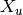 from the equation 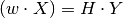.
First of all, get 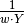 using least squares method. Then, extracts 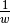 from the column matrix, with the hypothesis that 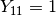.
Parameters: H (np.array(shape=3x3)) – Homography matrix. Returns: the new vertices coordinates values.
-
local2global(offsets, K=None, image2cartesian=True)¶ Convert Triangle coordinates to the global coordinates system.
The function performs 2 transformations:
- Obtains the 4-quadrant coordinates. The input is a coordinate for a 1-quadrant system, and the output corresponds to the 4-quadrant system.
- Move y-axis origin. Initially, for a given image the origin is placed at its top. However, for the used system the origin is placed at the middle of the 4 quadrants.
If indicated, the coordinates system will be transformed to the cartesian one. This is recommended, as the image system does not make sense for a space with origin in the middle.
Only absolute coordinates shall be transformed. Lengths and angles are invariant to the coordinates origin.
Finally, a scale ratio K will be applied to the coordinates. The coordinates will be directly multiplied by the ratio.
Parameters: - int] offsets (list[int,) – column and row offsets between the local and the global systems.
- K (possitive int or float) – Scale ratio to be applied to the points coordinates.
- image2cartesian (bool) – If True, a conversion from image coordinate system to cartesian system is performed. Thus, the output will be of the form of [x,y] instead of [row,column].
Raises: ValueError – if the scale ratio is negative.
-
class
uvisensor.geometry.Segment(pointA, pointB)¶ This class contains methods for dealing with 2D segments operations.
Parameters: - pointA (len-2 tuple or list) – X and Y coordinates of the initial points.
- pointB (len-2 tuple or list) – X and Y coordinates of the end points.
-
distance2point(point)¶ Return the distance of a point to the nearest segment’s point.
The calculus is based on the dot (scalar) product. The perpendicular projection of a first vector on a second one is the dot product the 2 vectors divided by the modulus of the second:
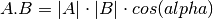
being 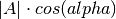 the projection of A on B
If the projection is less than 0, it implies that the point is left to the first point (as cos(alphha) is negative), being this first point the nearest one to the target point.
Moreover, if the projection is greter than the modulus of the segment, it implies that the target point is is right to the end point, being this the nearest one.
Finally, the the distance to the segment is obtained and returned using the Pitagoras’ theorem.
Returns: The distance of the point to the segment
imgprocessing.py¶
This module contains the Image class, for image processing operations.
The operations implemented in the class methods are focused to the images obtained from the external FPGAs in the UviSpace project. Thus, once obtained a grey scale image, this module provide functions for getting the shapes (triangles) in the image, and then their vertices. Prior to segmentate the image, a binarization has to be applied, as it eases the segmentation process.
Important note¶
A point array is written by convention in the form [row, column]. In a cartesian system, the points are expressed as (x,y). Finally, in an image representation (viewer), the typical is to display points coordinates as (x’, y’). They equivalences are the following:
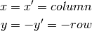
Thus, special care has to be taken when dealing with operations in different scopes e.g. trigonometric operations will be handled with the cartesian values, while image operations are normally performed with the array convention. Finally, when sending the array values to a viewer or to an external device, the image representation mentioned above is the typical used system.
-
class
uvisensor.imgprocessing.Image(image, contours=[])¶ Class with image processing methods oriented to UGV detection.
Parameters: - image (np.array) – original grey scale image.
- contours (list) – each element is an Mx2 array containing M points defining a closed contour.
-
binarize(thresholds)¶ Get a binarized image from a grey image given the thresholds.
The input image can only have one dimension. This method is intended to work with 3-component threshold values stored in a single 30-bit register:
- register[0 to 10] : red component thresholds
- register[10 to 20] : green component thresholds
- register[10 to 30] : blue component thresholds
The raw binary image contains a lot of noise. As it is very low around the triangles, masks around them are used to get rid of the noise in the rest of the image.
- :param [int or float, int or float] thresholds : minimum and
- maximum values betweeen whom the image intensity values will be accepted as 1 (rescaled to 255). Values greater than the maximum and smaller than the minimum will be truncated to 0.
Return bin_image: Image of the same size as the input image with only 255 or 0 values (Equivalent to 1 and 0), according to the input threshold values. Return type: binary numpy.array(shape=MxN)
-
correct_distortion(kx=0.035, ky=0.035, only_contours=True)¶ Correct barrel distortion on contours or on the whole image.
The distortion is corrected using a 2nd polynomial equation for every pixel with coordinates 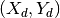. The resulting corrected coordinates 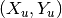 are obtained with the following equations:
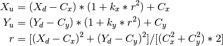
Parameters: - kx (float) – X-Axe Distortion coefficient of the lens.
- ky (float) – Y-Axe Distortion coefficient of the lens.
- only_contours (bool) – Specify if the correction is to be applied to the whole image or only to the contours.
-
get_shapes(tolerance=8, get_contours=True)¶ Get the shapes’ vertices in the binarized image.
Update the self.triangles attribute.
The shape is obtained using the Marching Cubes Algorithm. Once obtained, the vertices are calculated using the Ramer-Douglas-Peucker Algorithm. Both are implemented on the skimage library, and there is more information on its docs.
if the kwarg get_contours if False, it is assumed that the contours are already known (stored in variable self.contours). If this is the case, the marching cubes algorithm is omitted.
Parameters: - tolerance (float) – minimum distance between an observed pixel and the previous vertices pixels required to add the first one to the vertices list.
- get_contours (bool) – specify if the Marching Cubes Algorithm is applied to the binarized image. Specifically set to False when the binarization algorithm is implemented in the external device (i.e. the FPGA).
Returns: vertices of the N shapes detected on the image. each element contains an Mx2 np.rray with the coordinates of the M vertices of the shape.
Return type: list
videosensor.py¶
This module contains the VideoSensor class and related functions.
The functions are calls to the VideoSensor class methods in order to capture images and then work with them using the imgprrocessing.Image class and its methods.
-
class
uvisensor.videosensor.VideoSensor(filename='', scale=2.0)¶ This class contains methods for dealing with FPGA-camera system.
Parameters: - filename (str) – Path to the configuration file of the camera. The path shall be passed relatively to the script directory.
- scale (float) – scale ratio of the camera. relationship between the full resolution of the FPGA and the actual resolution that is being usedd. By, default, the FPGA has a 2:1 scale i.e. only half of the pixels are being used.
-
capture_frame(gray=True, tries=20, output_file='')¶ This method requests a frame to the FPGA.
Parameters: - get_gray (bool) – if true, a gray-scale image will be requested. If false, the requested image will be RGB.
- tries (int) – number of times that the system will try to obtain the requested image. After the last try, the system will exit.
- output_file (str) – URL name of the output file were the image will be stored. If left blank, the image won’t be saved.
Returns: image contained in an array with dimensions specified in the configuration file. If gray color is True, the dim value will be 1, and 3 for False (representing color images). dim equals to the number of components per pixel.
Return type: MxNxdim numpy.array
-
configure_tracker(tracker_id, min_x, min_y, width, height)¶ Send to FPGA rectangle parameters for defining a tracker.
Parameters: - tracker_id (int) – identifier of the detected object.
- min_x (int) – value of the X cartesian coordinate of the tracker window.
- min_y (int) – value of the Y cartesian coordinate of the tracker window.
- width (int) – value of the width (X axis) of the tracker window
- height (int) – value of the height (Y axis) of the tracker window.
NOTE: It is mandatory that the coordinates and dimensions passed to the FPGA are integers. Other types like float are not valid and the FPGA will not recognize them.
-
connect_client()¶ Read TCP/IP parameters in config file and connect to the device.
-
disconnect_client()¶ Close TCP/IP connection with the device.
If disconnect_client() function is not called, the socket won’t be able to be reopened.
-
get_homography_array()¶ Get an homography array from the configuration file.
-
get_limits_array()¶ Get the limits array from the configuration file.
-
get_offsets()¶ Get the offset of the sensor respect to the iSpace center.
The row offset of the camera images corresponds to the images height and the column offset corresponds to the images width.
Returns: row and column offsets i.e. [row_offset, col_offset] Return type: list[float, float]
-
get_register(register)¶ Read the content of the specified register.
Parameters: register (str) – key identifier of a valid register name of the FPGA. The full list of valid keys and their associated name can be found on the documentation of the client.Client class. Returns: the data stored in the indicated register.
-
load_configuration(write2fpga=True)¶ Load the config file and send the configuration to the FPGA.
- Read camera and sensor parameters in self.filename. They are then stored in the self._params variable.
- If write2fpga flag is True, write paramters in the FPGA registers by calling set_resgister() method. Finally, send ‘CONFIGURE_CAMERA’ command to FPGA.
-
read_conffile(filename)¶ Look for a configuration file on the given path and read it.
-
set_register(register, value)¶ Write a value into an FPGA register.
Parameters: - register (str) – key identifier of valid register name of the FPGA. The full list of valid keys and their associated name can be found on the documentation of the client.Client class.
- value (int or tuple/list) – the value that will be written to the register. It is mandatory to send it as string type. Thus, the value has to be converted. For tupples or lists, brackets or parenthesis are not allowed, so they have to be eliminated.
Returns: message obtained back from the FPGA after writing into the register.
Examples: - sent_value = ‘6’ —> OK
- sent_value = ‘(3.45, 2.21)’ —> No OK
- sent_value = ‘3.45, 2.21’ —> OK